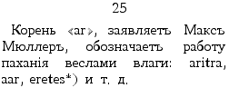
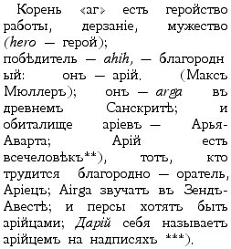
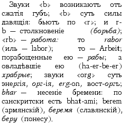
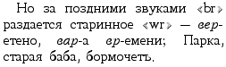
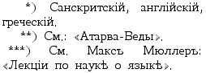

Glossolalia (Section 25)

The root "ar," proclaims Max Muller, signifies the labor of plowing with oars -the ploughshares of the water: aritra, oar, eretes,* etc.

The root "ar" is the heroism of labor, daring, bravery (hero -- in Russian geroj) the victor -- ahi -- is nobleborn: he is -- Arius (Max Muller); he is -- arya in ancient Sanskrit; and the Aryan abode is -- Arya-avarta; Arius is allmen.** the one who labors nobly -- the ploughman [oratel'], Arian; Airga sounds in the Zend-Avest;. and the Persians want to be Arians; Darius calls himself an Aryan in the inscriptions.***

The sounds "b" arise from compressing the lips; "b" are oppressing forces: they beat against the "r"; and r-b is -- conflict (brawling [bor'ba]) "rb" is -- labor [rabota]: that is rabor (or labor); that is -- Arbeit; those belabored by it are -- slaves [raby]; and those who have mastered it are (ha-er-be-er) the brave [khrabrye]; the sounds "org" are energy, orgy [org-iya], erg-on, ecstacy-[vostorg]; bhar is -- bearing the burden: in Sanskrit it is bhar-ami; berem (Armenian), beremya (Slavic), bear [beru] (I carry).

But behind the latter sounds of "br" resounds an ancient "wr" -- the whirling spindle [ver-eteno], warmth [var-a], turning time [vr-emya]; Parca, the old maid, burbles.

*Sanskrit, English, Greek.
** Cf. the Atharva-Veda.